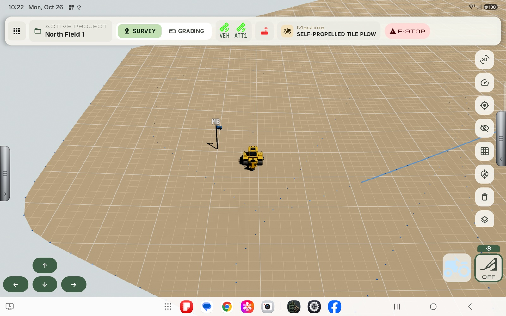
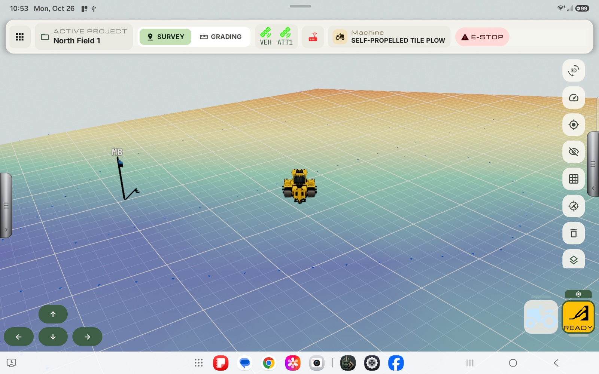
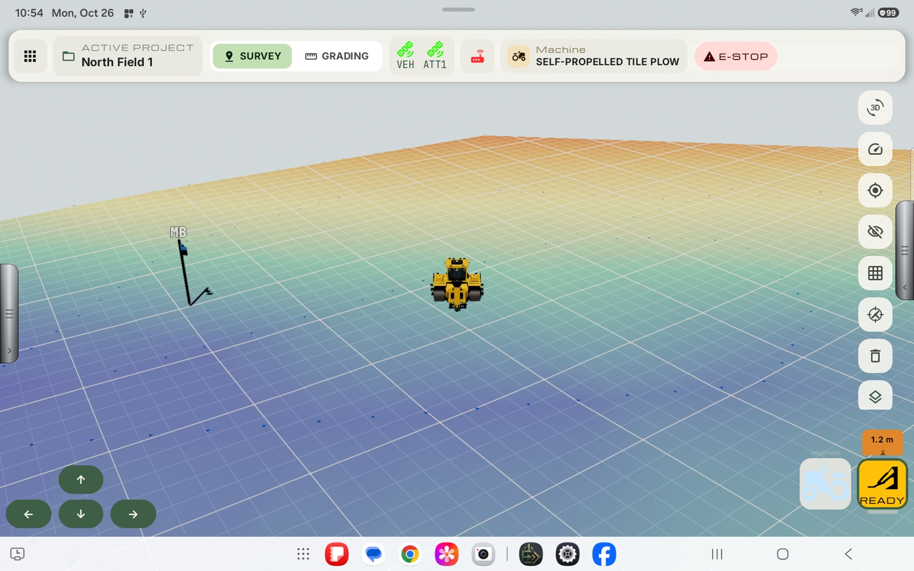
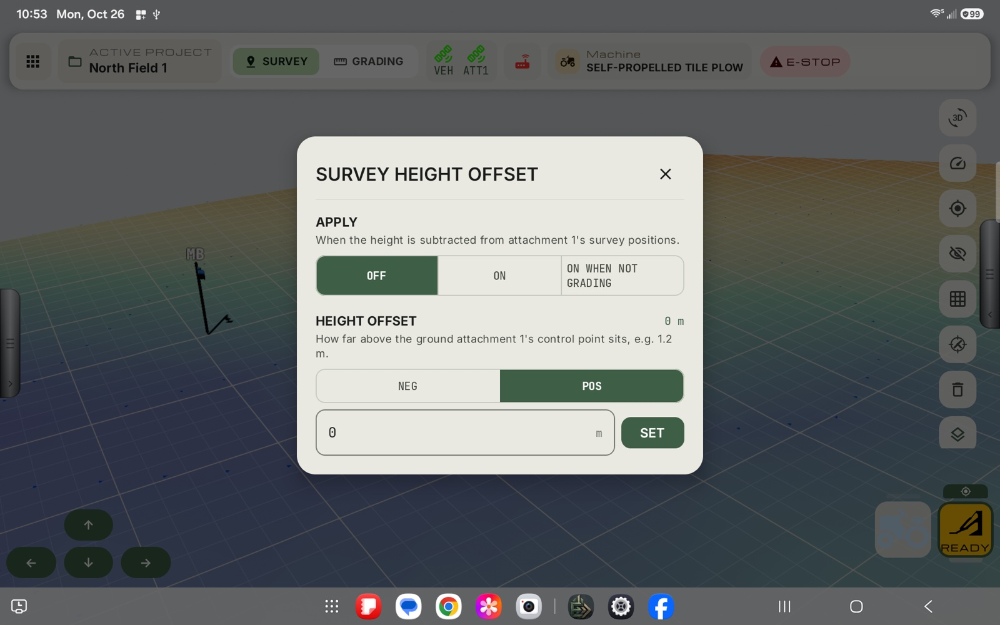

Survey mode
Everything the survey vehicle does works the same on the plow.
User Manual › Tile plow run screen
Self-Propelled Tile Plow
The tile plow uses the same setup wizard as the survey vehicle, with one extra step for the receiver on the boot. Flip between Survey and Grading from the top bar.
Everything the survey vehicle does works the same on the plow.
See how far the plow bit is above or below target, and let the machine follow it.
Vehicle and boot GPS status side by side in the top bar.
Record the ground under the receiver, even when the boot receiver is mounted above it.
The Self-Propelled Tile Plow is set up with the same wizard as the Survey Vehicle (see Creating a Survey Vehicle), with an extra boot step for the receiver on the plow boot. Its run screen has two modes, chosen in the top bar:
| Mode | Use it to |
|---|---|
| Survey | Record benchmarks, markers, lines and terrain, exactly as on the Survey Vehicle screen. Everything in The Survey Vehicle run screen works the same here. |
| Grading | Grade to a design: see how far the plow bit is above or below the target, and let the machine follow it. |

The top bar shows a GPS icon for the vehicle (VEH) and one for the boot (ATT1). Tap an icon for its fix details; hold either to open GPS Diagnostics (see GPS Diagnostics).
The plow adds buttons to the column the Survey Vehicle has.
| Button | Tap | Hold |
|---|---|---|
| 3D | Switches between flat 2D and 3D terrain. | – |
| Speedometer | Adds a live reading to the map (see Status panels). The plow can also show grade error, boot depth, pipe distance from outlet and pipe size loaded, which need a design. | – |
| Target | Locks or frees the camera. | – |
| Eye | Shows or hides contour lines. | Opens Contour Lines settings. |
| Grid | Shows or hides the ground grid. | – |
| Crosshair | Starts a tie-in to an existing pipe (see Tie-in: connecting a new pipe to an existing pipe). | – |
| Trash | Deletes surveyed terrain points: tap to drag a 1 m line over the points, hold to trace an area. Not available while terrain is being recorded. | – |
| Layers | Shows or hides the terrain map. | Opens the opacity slider. |
The two large buttons at the bottom right are the vehicle and the boot. The boot button shows the state of grade control, for example OFF when no design is active and READY once one is.
Above each receiver button at the bottom right is a small coloured survey tab. It decides which receiver the survey tools record from (benchmarks, markers, lines, terrain), and it carries the survey height offset.

A survey records where the receiver's control point is. If that point is not on the ground (for example the receiver on the boot is mounted above the surface you want to record) every recorded point comes out too high. The survey height offset is how far above the ground the control point sits. When it is on, Exodus subtracts that height from the survey positions, so what is saved is the ground under the receiver.
It applies only to the survey receiver, and only to the boot (attachment) receiver. The vehicle's own tab has no offset.
| Tab state | Meaning |
|---|---|
| Green, with a GPS icon | This receiver is the survey receiver, with no offset applied. |
| Orange, with a height such as 1.2 m | This receiver is the survey receiver and the offset is on. The number is the height being subtracted. |
| Red | Locked: a line, benchmark or terrain is recording, so the survey receiver cannot be changed or its offset edited until it finishes. |
| Faint grey | Not the survey receiver. Tap it to make it so. |

| Choice | Applied |
|---|---|
| Off | Never. |
| On | Always. |
| On when not grading | In Survey mode, and switched off while you are in Grading mode. |

Tap the survey tab once the boot is already the survey receiver to flip the offset on or off, without opening the dialog. The value you set is kept, so you can switch it back on.
The offset is applied to what the survey tools record. It is not part of the grade error calculation.